اساتید، پژوهشگران و همکاران RCHEP
پژوهشگران مرکز پژوهشی فیزیک انرژی بالا شامل اعضای هیأت علمی، پژوهشگران پسادکتری و فارغالتحصیلان دانشکده فیزیک دانشگاه صنعتی شریف.

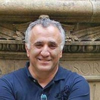
دکتر شاهین روحانی
فیزیک انرژی بالا، نظریه میدان همدیس (CFT)، سیستمهای پیچیده
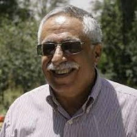
دکتر حسامالدین ارفعی
فیزیک انرژی بالا، نظریه ریسمان، فیزیک ذرات بنیادی
دکتر سهراب راهوار
کیهانشناسی، همگرایی گرانشی، سیارات فراخورشیدی، نجوم رصدی، زیست فرازمینی
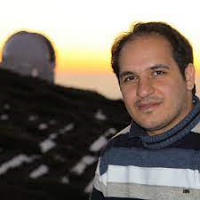
دکتر شانت باغرام
کیهانشناسی، تحول ساختارهای بزرگمقیاس کیهانی، ماده و انرژی تاریک
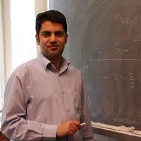
دکتر امین فرجی آستانه
فیزیک انرژی بالا، دوگانی پیمانه/گرانش (AdS/CFT)، گرانش کوانتومی، تغییر شکل TT
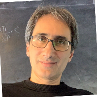
دکتر مهدی ترابیان
فیزیک انرژی بالا، نظریه ریسمان، پدیدهشناسی ذرات، کیهانشناسی آغازین
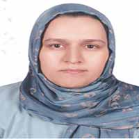
دکتر مریم زینلی
فیزیک ذرات تجربی، همکاری بینالمللی در آزمایش CMS سرن
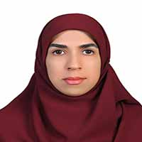
دکتر زینب کلانتری
کیهانشناسی، فورانهای پرتو گاما (GRBs)، مدلهای انرژی تاریک
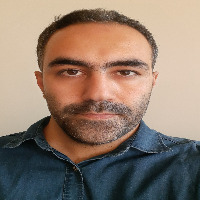
دکتر احمدرضا مرادپوری
نظریه ریسمان، جبرهای ویروسورو و کک-مودی، Swampland
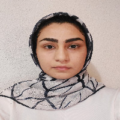
دکتر نیلوفر وردیان
هولوگرافی و اطلاعات کوانتومی، شبکهی تانسوری پیوسته، پیچیدگی کریلف
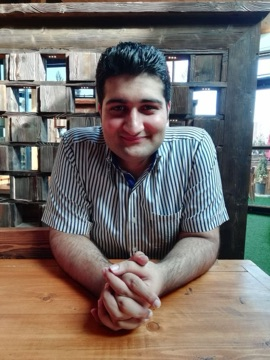
دکتر ابراهیم سیری
نظریه میدان در دمای متناهی، ماده کوارکی، پلاسمای کوارک-گلوئون
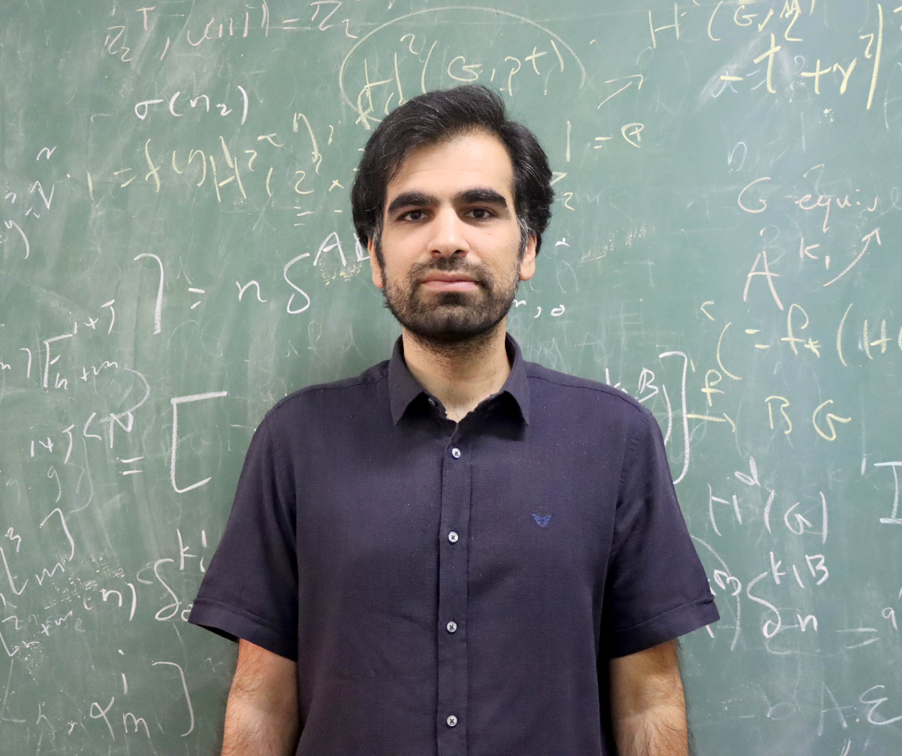
دکتر میلاد نوری
کیهانشناسی، تابش زمینه کیهانی، شبیهسازی ساختارهای کیهانی
دکتر آرمین قاضی
ماده چگال، ناهنجاری کوانتومی، تقارنهای فضازمان
دکتر علی اشتری اصفهانی
فیزیک نوترینو، پدیدهشناسی ذرات، آزمایشهای پرانرژی
دکتر مصطفی قاسمی
نظریه ریسمان، آنتروپی نسبی، حالتهای تصادفی در نظریه میدان